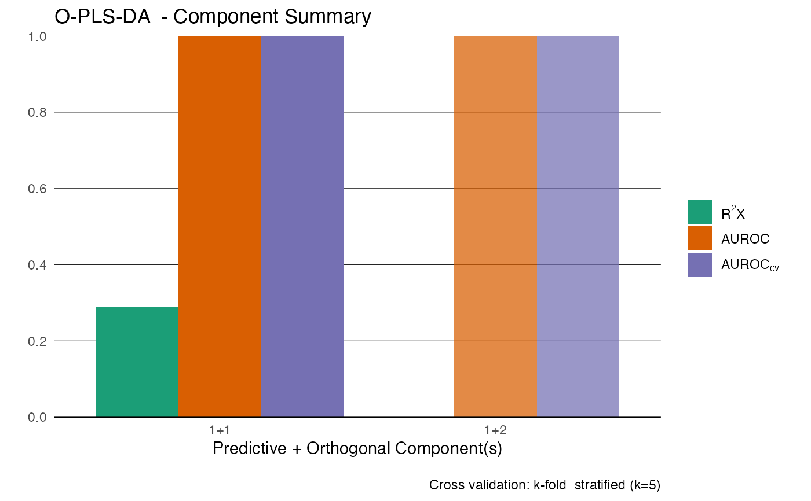

Generates predictions (scores and outcome estimates) using an existing OPLS model fitted with opls(). Supports regression and 2-class discriminant analysis.
Arguments
- opls_model
An object of class
OPLS_metabom8, generated by theopls()function.- newdata
A numeric matrix or data.frame. Each row is a new observation and columns must match those used in the model.
- idx_scale
Optional integer vector. Row indices of
newdataused to compute new centering/scaling parameters. IfNULL, model parameters are reused.
Value
A named list with the following elements:
- Y_predicted
Predicted numeric or class outcomes (depending on model type).
- t_pred
Predicted scores for the predictive component(s).
- t_orth
Scores for orthogonal components (uncorrelated variation).
- t_orth_pca
Optional: scores of the first principal component of orthogonal scores (if >1 orthogonal component).
Details
Class predictions are based on the closest numeric projection from the training labels and are not corrected for class imbalance. If more than one orthogonal component is present, the PCA of orthogonal scores is computed to summarise variation orthogonal to Y.
References
Trygg J. and Wold S. (2002). Orthogonal projections to latent structures (O-PLS). Journal of Chemometrics, 16(3), 119–128. Geladi P. and Kowalski B.R. (1986). Partial least squares and regression: a tutorial. Analytica Chimica Acta, 185, 1–17.
Examples
data(covid)
X <- covid$X
an <- covid$an
model <- opls(X, Y = an$type)
#> Performing discriminant analysis.
#> Reducing k to 5 due to small group size (min n = 5).
#> An O-PLS-DA model with 1 predictive and 1 orthogonal components was fitted.

preds <- predict_opls(model, X)
table(preds$Y_predicted, an$type)
#>
#> Healthy Patients Cov19 (+)
#> Patients Cov19 (+) 5 5